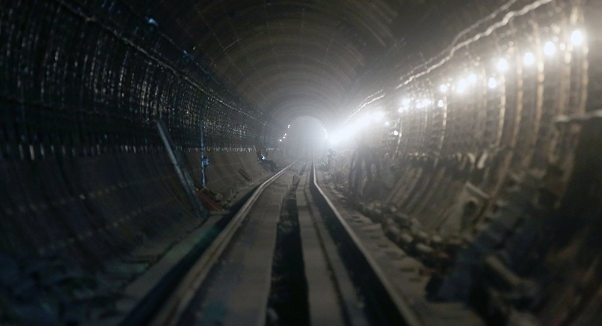

19:01 13.01.2017(actualizada a las 21:55 13.01.2017)
El metro de Moscú es uno de los más grandes y hermosos del mundo y para los ciudadanos de la capital rusa, este medio de transporte es de vital importancia. En un reportaje exclusivo, Sputnik te descubre lo que no ven los pasajeros en su día a día, la parte oculta del metro que permite garantizar la seguridad de sus millones de usuarios.
Noticias relacionadas : El metro de la capital, uno de los sistemas de transporte más grandes del mundo, es utilizado diariamente por casi 8 millones de personas. Los que no quieren llegar tarde al trabajo ni empezar el día atrapados en un atasco saben que este es el medio más seguro y puntual de la ciudad. Además, para mayor comodidad de los pasajeros, todos los trenes disponen de acceso wifi gratuito.
Con el fin de que este 'gigante' funcione diariamente como un reloj desde las 5.30 de la mañana hasta la 1.00 de la noche —los 7 días de la semana, los 365 días del año—, todos sus elementos se someten de manera regular a revisiones y trabajos técnicos durante las noches. El metro de Moscú fue abierto en 1935. Teniendo en cuenta su 'edad avanzada', las líneas más anticuadas suelen requerir trabajos de mantenimiento más profundos. Por eso, durante los fines de semana o algunos días festivos —cuando hay menos pasajeros—, algunos tramos de línea se cierran para que los técnicos puedan realizar todos los trabajos necesarios.
Sputnik se adentró en la 'vida secreta' del metro moscovita y visitó el tramo central de la primera línea, llamada Sokólnicheskaya, durante los trabajos de mantenimiento que duraron 26 horas e implicaron a 1.300 empleados. Durante todo este tiempo se comprobaron más de 11 kilómetros de vía y se sustituyeron más de un millar de componentes. Además, con la ayuda de una máquina de alta presión, a lo largo de las distintas estaciones, se limpiaron 2,5 km de raíles.

El 'diagnóstico' de las entrañas de este gigante se efectúa por medio de un equipo especial: una locomotora que monitorea el estado de los raíles a una velocidad de hasta 70 km / h. A bordo de esta máquina viajan 10 técnicos. A veces, este trabajo es realizado durante 24 horas. Para que los trabajadores puedan operar en las mejores condiciones posibles, este 'vagón de reparación' está equipado con cocinas móviles y zonas de descanso. Los últimos modelos de estos aparatos son únicos, y pueden funcionar durante 42 horas sin descanso gracias a dos motores diésel y a un depósito de combustible de 200 litros.

Otro elemento clave del metro son las escaleras mecánicas. Algunas de ellas son muy largas y descienden a grandes profundidades. Por ejemplo, las escaleras mecánicas de la estación Parque de la Victoria son las más largas del mundo y tienen una longitud 130 metros.